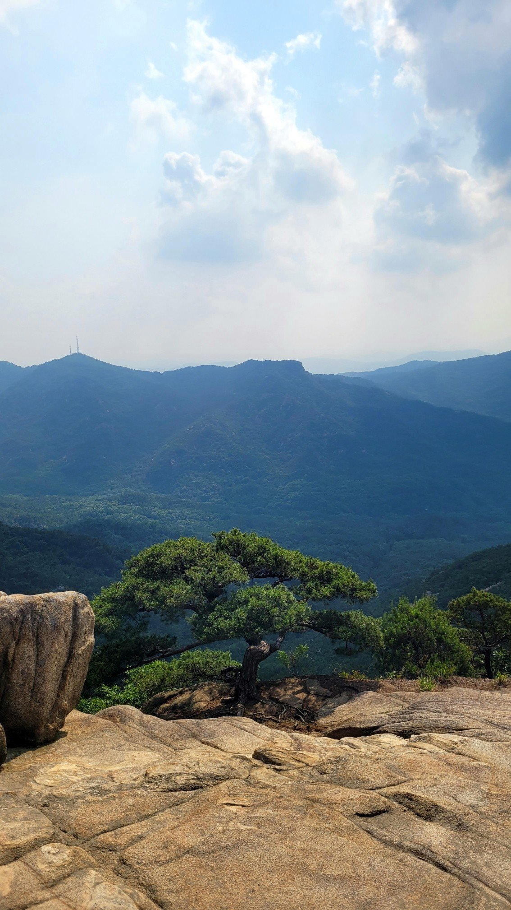
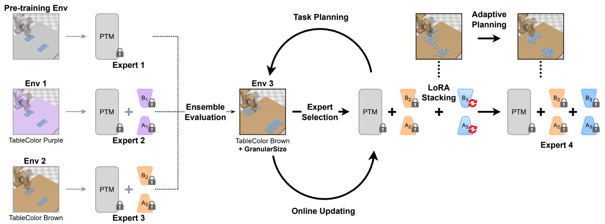
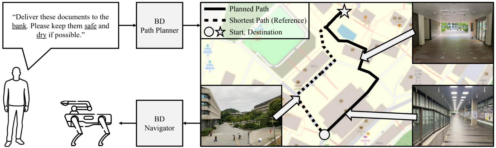
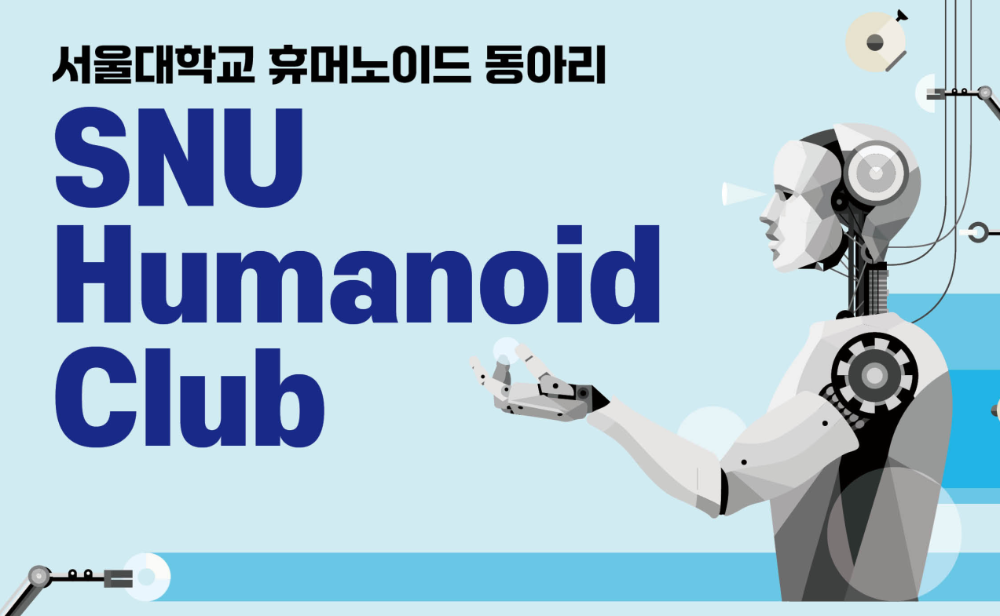
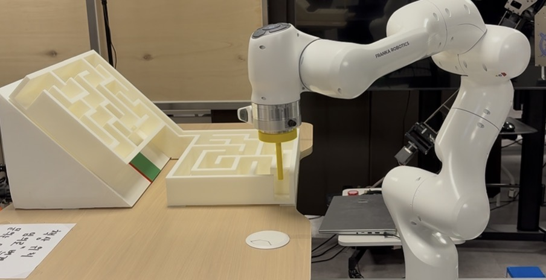

|
Jihun Moon
I am a 4th-year undergraduate student in Mechanical Engineering at Seoul National University, where I am advised by Prof. Seong-Woo Kim.
My research interests lie in Robotics, World Models, and Adaptive Learning.
My goal is to build an embodied Intelligence that can recognize itself and experience the world as a matter of survival.
Email /
CV /
Github
|

|
|

|
SPREAD: Scalable Pre-trained World Model for Adaptive Dynamics Model
Jihun Moon, Seong-Woo Kim
Under Review at RA-L, 2026
[Project Video]
We introduce SPREAD, the first framework that enables a pre-trained world model to learn environmental changes online, and continuously.
|
|

|
Beyond Destinations: Instruction-Aware Graph Path Planning and Navigation with OpenStreetMap
Donghwi Jung, Jihun Moon, Jiyang Lee, DongYeop Shin, Jungjae Lee, Jinhee Kim, Seong-Woo Kim
Under Review at ICRA, 2026
[Project Video]
We propose BD-Nav, a novel instruction-aware navigation framework that integrates large language models with OpenStreetMap graphs to generate routes that align with user intent.
|
Academic & Extracurricular Activities
|
|

|
SNU Humanoid Club
Founder & President, 2025 - Present
Established Seoul National University’s first student organization dedicated to humanoid robotics as a founding president, preparing international humanoid competitions focused on autonomous task execution.
|
|

|
Maze Solving Manipulation
Course Project, 2025
[Project Video]
Implemented an A*-based path planner with a feedback trajectory tracking controller, achieving the top performance among all teams.
|
|
{kind=link}